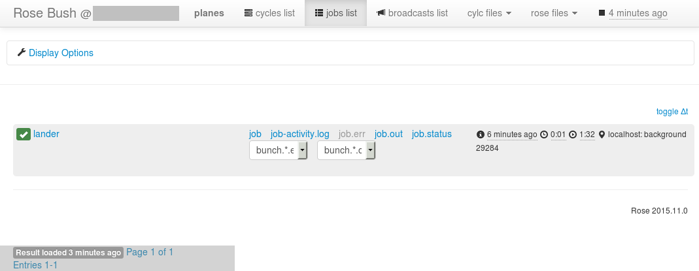

This document is released under the Open Government Licence.
This part of the Rose user guide walks you through using the Rose Bunch built in app.
This allows multiple variants of a command to be run under a single job.
Often, we want to run many instances of a command that differ only slightly from each other at the same time - an example would be where a command is run repeatedly with only its arguments changing.
Rather than creating multiple apps or optional configs to change the way a command is to be run, we can instead use the built-in rose bunch application to run multiple command variants, in parallel, under a single job as defined by an application configuration.
It is important to note that when running your rose bunch app under load balancing systems such as PBS or Slurm, you will need to set resource requests to reflect the resources required by running multiple commands at once.
For example, if a single command would require 1GB memory and the app is configured to run up to 4 commands at once then 4GB of memory should be requested.
In this example we are going to create a suite that simulates the handling of landing planes at an airport. For a given plane the process of landing and unloading is the same: land, taxi to the terminal, unload passengers and get clear. We can refer to this as the "landing" routine. What differs between landings is the plane type, number of passengers carried and the resulting timings for each stage of the landing process.
Create a new suite (or just a new directory somewhere - e.g. in your homespace) containing a blank rose-suite.conf and a suite.rc file that looks like this:
[cylc]
UTC mode = True # Ignore DST
[scheduling]
[[dependencies]]
graph = lander
[runtime]
[[root]]
script = rose task-run
[[lander]]
In the suite directory create an app/ directory
mkdir app
In the app directory create a lander/ directory
cd app mkdir lander
In the app/lander/ directory create a rose-app.conf file using your editor of choice and paste the following lines into it:
mode=rose_bunch [bunch] command-format=land %(class)s %(passengers)s [bunch-args] class=airbus concorde airbus cessna passengers=40 20 30 2
This configuration will run a rose bunch task that calls
multiple instances of the land command, supplying arguments
to each instance from the class and passengers
entries under [bunch-args].
In the app/lander/ directory create a bin/ directory:
mkdir bin
Using your editor of choice, create a file named "land" under the bin directory and paste in these lines. This script capures the landing routine and expects two arguments; the plane type (its class) and the number of passengers it is carrying.
Finally, make the new land file executable by navigating into the bin directory of the lander app and running:
chmod +x land
Navigate to the top directory of your suite (where the suite.rc and rose-suite.conf files can be found) and run rose suite-run. Your suite should run, launch the cylc gui and successfully run the lander app.
Once the suite has finished running and has shutdown, open rose bush to view its output (note that you can close the cylc gui at this point). You can quickly get to the relevent page by running rose slv from within the suite directory.
In the rose bush jobs page for your suite you should be presented with a page containing a single row for the lander task, from which you can access its output. In that row you should see something like this:
In the rose bush entry you should see that the usual links are present for the task such as for job.out, job.status etc. with the addition of two drop down boxes: one for bunch.*.err and one for bunch.*.out. Rather than mixing the outputs from the multiple command invocations being run at once, rose bunch directs their output to individual output files. So, for example, the ouput from running the command with the first set of parameters can be found in the bunch.0.out file, the second set in the bunch.1.out file etc. Examine these output files now to confirm that all four of the args combinations have been run and produced output.
While the different invocations of the command have their own output
directed to indexed files, it can sometimes be difficult to quickly
identify which file to look in for output. To aid this, rose
bunch supports naming command instances via the
[bunch]name= option.
Open your app config (under app/lander/rose-app.conf) and
add the following line under the [bunch] section:
names=BA123 Emirates345 BA007 PC456
Re-run your suite and, once it has finished, open up rose bush and examine the job listing. In the drop-down bunch.*.err and bunch.*.out boxes you should now see entries for the names you've configured rather than the bunch.0.out ... bunch.3.out entries previously present.
In some situations we may need to limit the number of concurrently
running command invocations - often as a result of resource limitations.
Rather than batching up jobs into sets of N simultaneously
running commands, rose bunch apps can be configured to run
as many commands as possible within some limit i.e. while N
commands are running, if one of them finishes, don't wait for the
remaining N-1 jobs to finish before running the
N+1th one.
In the case of our simulated airport we will pretend we only have two
runways available at a time on which our planes can land. As such we need
to limit the number of planes being landed. We do this using the
[bunch]pool-size= configuration option of the rose
bunch app.
Open your app config (under app/lander/rose-app.conf) and
add the following line to the [bunch] section:
pool-size=2
Run your suite again. Notice that this time round it takes longer for the task to run as it has been limited in the number of command variants it can run simultaneously. You can see the individual commands being started by viewing the task stdout in the cylc gui by right clicking on the task and selecting "View" then "job stdout". As an example, when the "BA007" invocation starts running you should see the line:
[INFO] BA007: added to pool
appear in the job output after a while whereas, when running without a pool-size, the line will appear pretty quickly.
In this tutorial we have learnt how to configure a rose bunch app to run a set of command variants under one job. We have learnt how to name the individual variants for convenience in examining the logs and how to limit the number of concurrently running commands.
Further options are listed in the rose bunch documentation.
These include, configuring how to proceed following failure of an
individual command invocation - [bunch]fail-mode=),
automatically generating N command-instances and
enabling/disabling the app's incremental mode etc.